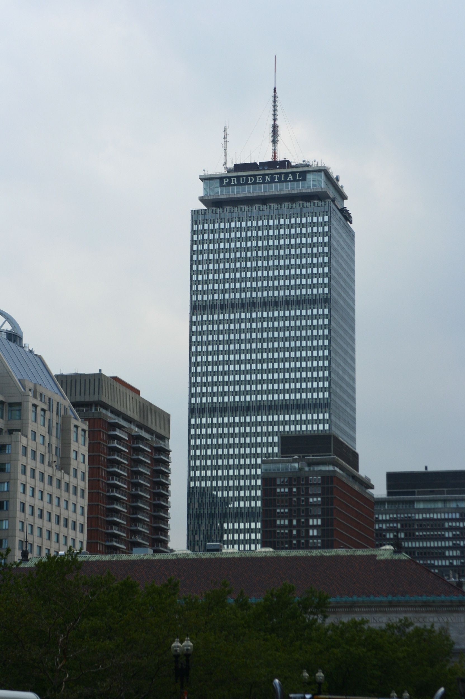
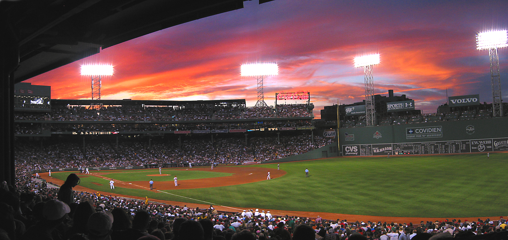
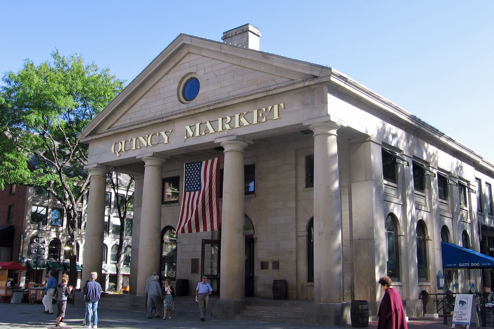
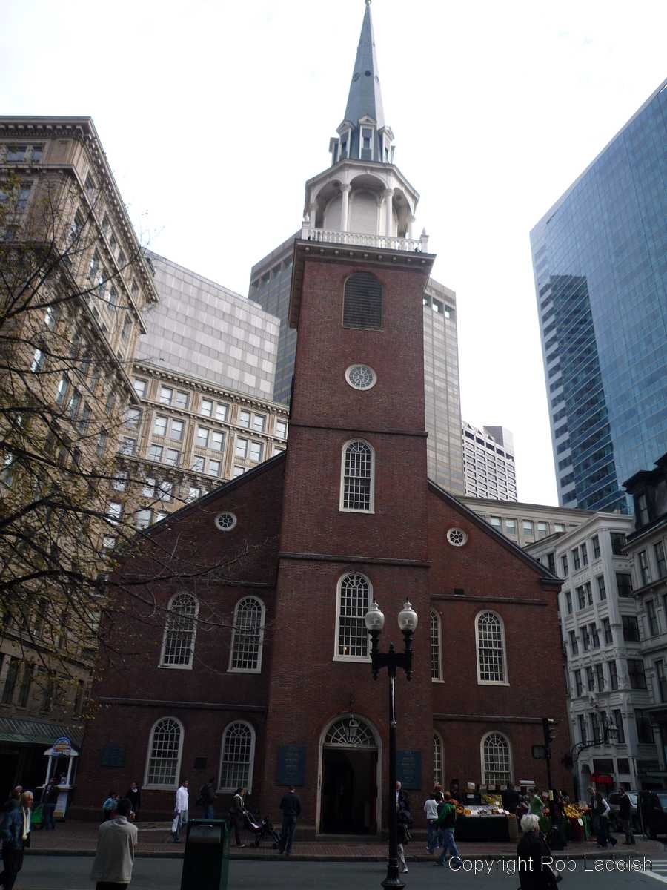
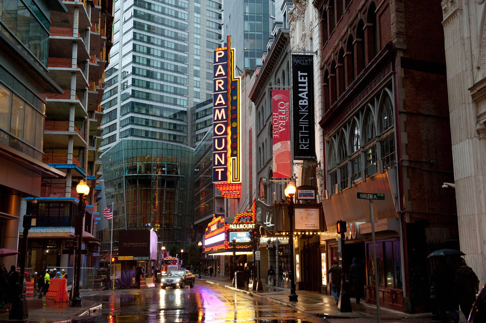

"...oh, Boston you're my home". Thank you to The Standells for that lovely introduction. Boston. A city with a great mix of revolutionary history, elite universities, incredible theatre productions, and undying sports fever. Boston has it all, folks. Come and visit. Stay awhile. Have some "chowdah". See the "Green Monstah" at Fenway. Throw some tea in the harbor. Be a rebel.
There is so much to do in Beantown. You can take a stroll down the Freedom Trail and see famous colonial areas such as the Old North Church (One if by land, Two if by sea) and the Battle of Bunker Hill site. You could catch a show in one of the many historic theatres on Washington Street. Do some kayaking on the Charles River. View Massachusetts from "Top of the Hub" at the apex of the Prudential Tower. Why not grab some New England clam chowder in Quincy Market? Grab a brew at the iconic Cask 'n Flagon outside Fenway Park and then catch a game! If you are here in the winter, head over to the TD Garden to watch either the Celtics or Bruins. Whatever it is, Boston has it for you. We also have plenty of Bostonians to let you know how wicked awesome our sports teams are (see below).
| Place | Address | Web Link For Additional Info |
|---|---|---|
| Prudential Center | 800 Boylston Street | To the "Pru" |
| Fenway Park | 4 Yawkey Way | Go Sox! |
| Faneuil Hall Marketplace | 4 South Market Street | Quincy "Mahket" |
| Old North Church | 193 Salem Street | One If By Land... |
| Theatre District | Washington Street | Grab a drink, see a show |
For more information on visiting Boston, visit here and explore!!! The site has a bunch of content on it. Plenty of advanced HTML that I have not learned yet. It also has a Google translate feature that can instantly translate the entire website into any language!
{kind=link}
{kind=link}
{kind=link}
{kind=link}
{kind=link}